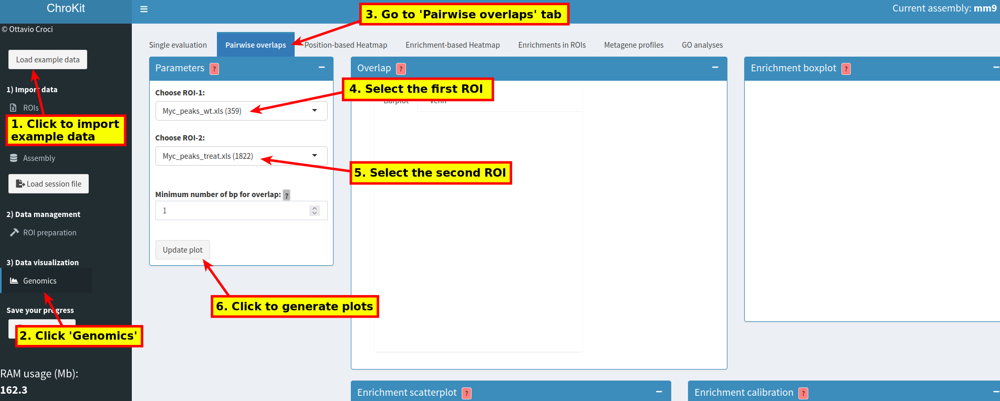
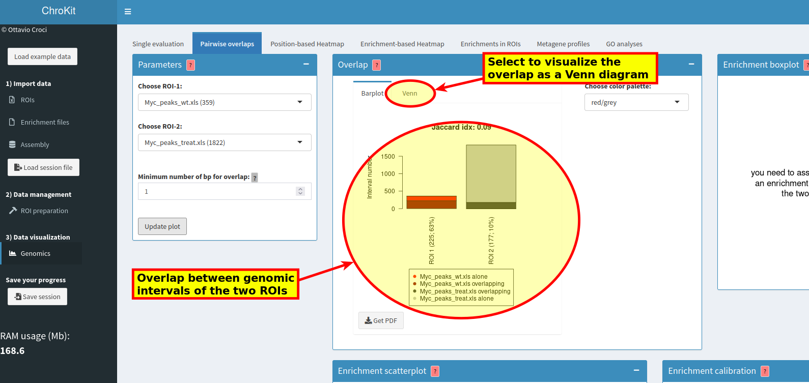

Load the example data (1), click 'Genomics' (2) and select the pairwise ovelaps tab (3). Alternatively, if you have your own data (ROIs), start from step 2 and select the ROIs that you want to analyze (step 4, 5):  Then, visualize the results: 